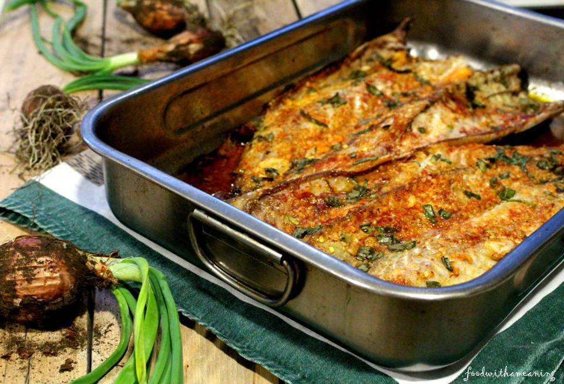

Cavala Assada na Brasa
Ingredients
- 4 mackerel fillets
- 1/4 cup olive oil
- 2 tablespoons fresh parsley, chopped
- 2 cloves garlic, minced
- 1 teaspoon dried oregano
- 1 lemon, sliced
- Salt and black pepper to taste

Preparation
-
Preheat the Grill:
Preheat your grill to medium-high heat.
-
Prepare the Marinade:
In a bowl, mix together the olive oil, chopped fresh parsley, minced garlic, dried oregano, salt, and black pepper.
-
Season the Mackerel:
Brush the mackerel fillets with the prepared marinade, ensuring they are well-coated.
-
Grill the Mackerel:
Place the mackerel fillets on the preheated grill. Grill each side for about 4-5 minutes or until the fish is cooked through and has nice grill marks.
-
Serve:
Transfer the grilled mackerel to a serving platter. Garnish with lemon slices. Serve hot and enjoy this simple yet flavorful dish.